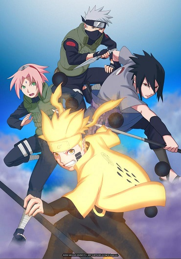

Accueil
#############
#################
Art Martiaux
Sport
Categorie : Art Martiaux
Naruto Shippuden

Source : Naruto Shippuden - Épisode 450 en VOSTFR et VF sur ADN
Source : Naruto Shippuden - Épisode 477 en VOSTFR sur ADN
Bakumatsu
Source : Bakumatsu - Épisode 1 en VOSTFR sur ADN
Source : Bakumatsu - Épisode 24 en VOSTFR sur ADN